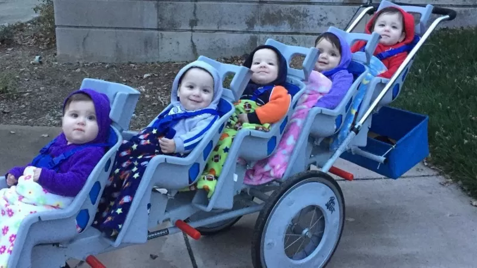

ከየፈርጁ

ማርስ ላይ ሕይወት ነበረ? 2 ቢሊየን ዶላር የወጣባት ሮቦት መልስ ይኖራታል

በአንድ ጀንበር ሚሊየነር የሆነው ታንዛኒያዊ ሌላ 2 ሚሊዮን ዶላር አገኘ

ብዙ ነገር ''አንድ'' የሆነባት ሃገር ኤርትራ

"ለኢትዮጵያ ሳተላይት ማምጠቅ ቅንጦት አይደለም"

21 ሚያዝያ 2022
ከሰሞኑ ከአንድ ዓመት በፊት ዘጠኝ ልጆችን ተገላግላ ሁሉም ልጆቿ በጤና የአንደኛ ዓመት ልደት በዓላቸውን ማክበራቸውን ተሰምቷል። የዓለም የድንቃ ድንቅ መዝገብ በአንድ ጊዜ በርካታ ልጆች በመውለድ ክብረ ወሰን ላይ ስሟን ያሰፈረው የስምንት ልጆች እናት የሆነችውን አሜሪካዊት ናዲያ ሱሌይማንን ነው። አሁን ደግሞ የማሊ ዜግነት ያላት እና በሞሮኮ ዘጠኝ ልጆችን የተገላገለችው ሃሊማ ሲሴ የዚህ ክብረወሰን ባለቤት መሆኗ ተዘግቧል።
ቢቢሲ ይህንን ዘገባ ለመስራት በኢትዮጵያ ውስጥ በርካታ ልጆችን የወለዱ እናቶችን መረጃ ለማግኘት በሞከረበት ጊዜ፣ አንዲት እናት ከሦስት ሳምንት በፊት በኦሮምያ ክልል ሰሜን ሸዋ ሙከ ጡሪ ከተማ ሁለት ወንድ እና ሁለት ሴት ልጆችን በአጠቃላይ አራት ልጆችን መገላገሏን የሙከ ጡሪ ሆስፒታል ሜዲካል ዳይሬክተር ዶ/ር ፀጋዬ ተስፋዬ ለቢቢሲ ተናግረዋል። እነዚህ ሕጻናት መወለድ ካለባቸው ጊዜ ቀድመው ስለተወለዱ፣ ለተሻለ ሕክምና ወደ አዲስ አበባ ተልከዋል። በሌላ ፍለጋችን ደግሞ እንዲሁ በአዳማ የዛሬ ስድስት ዓመት አንዲት እናት እንዲሁ ሁለት ሴት እና ሁለት ወንድ ልጆች ተገላግላ ልጆቹም ስድስተኛ ዓመታቸውን ማክበራቸውን ማወቅ ችለናል። ወ/ሮ ራሔል ከበደ በመጀመሪያ እርግዝናቸው የሁለት ወንድ እና የሁለት ሴት እናት እንደሚሆኑ ሲነገራቸው ማመን ተስኗቸው ለሦስት እና አራት ቀናት መናገር አቅቷቸው እንደነበር ለቢቢሲ ገልፀዋል። ቢቢሲ ያነጋገራቸው የማህፀንና ጽንስ ሐኪሞች ኢትዮጵያ ውስጥ በአንድ ጊዜ ሦስት እና አራት ልጅ መውለድ አልፎ አልፎ የተለመደ እንደሆነ ከዚያ በላይ ግን እንዳልገጠማቸው ነግረውናል።
የሙከ ጡሪ ሆስፒታል ሜዲካል ዳይሬክተር ዶ/ር ፀጋዬ ተስፋዬ በሆስፒታላቸው አንዲት እናት አራት ልጆችን መውለዳቸው የተለየ እንደነበረ እና ከዚህ ቀደም ገጥሟቸው እንደማያውቅ ያስረዳሉ። ዶ/ር ፀጋዬ እስካሁን የተደረጉ ጥናቶችን በማጣቀስ ጉዳዩ ተፈጥሯዊ መሆኑን ገልፀው፣ ብዙ የመውለድ ዕድሉ ግን በሁኔታዎች የተወሰነ መሆኑን ያስረዳሉ። "ሁለት መንታ ልጆችን የመጸነስ እድል በአማካኝ ከ250 እርግዝና በአንዱ ይከሰታል። ሦስት ጽንስ በአንድ ጊዜ የመፈጠር ዕድል ደግሞ ከ10 ሺህ እርግዝናዎች በአንዱ የመከሰት ዕድል አለው" ይላሉ። ከሦስት በላይ ጽንስ የመፈጠር እድል እያነሰ እንደሚሄድ የሚናገሩት ዶ/ር ፀጋዬ አራት ልጆች የመጸነስ ዕድል የሚፈጠረው ከ700 ሺህ እርግዝናዎች በአንዱ ነው ብለዋል። በአንድ ጊዜ ብዙ ልጆችን የመፀነስ (Multiple Pregnancy) በዋነኛነት ሁለት ዘርፎች አሉት። ተመሳሳይ መንትያዎች (Identical twins) እና ወይንም የማይመሳሰሉ (Fraternal twins) የሚባሉት ማለት ነው። በዩናይትድ ኪንግደም ሦስት ተመሳሳይ መንትያ ወንድ ልጆች ከሰሞኑ አንደኛ ዓመታቸውን አክብረዋል። እንደዚህ ዓይነቱ የተመሳሳይ መንትያዎች እርግዝና ከ2 ሚሊየን እርግዝናዎች አንድ ብቻ ነው የሚገጥመው። በዓለም ላይ የሰው ልጅ በአንድ ጊዜ ምን ያህል ልጆችን ይወልዳል በሚለው ጉዳይ ላይ ቁርጥ ያለ ሃሳብ የለም። የማህጸን እና ጽንስ ሕክምና ባለሙያ የሆኑት የሆኑት ዶ/ር ደምሰው አመኑ፣ አንዲት ሴት በአንድ ጊዜ ሊኖራት የሚችለው የልጆች ቁጥር ይህ ሊሆን ይችላል ተብሎ በጥናት የተቀመጠ ነገር የለም ይላሉ።
የኋላ የቤተሰብ ታሪክ፣ ከ30 ዓመት በኋላ የሚፈጠር ጽንስ፣ እና ልጅ ለማግኘት የሚደረግ ሕክምና በአንድ ጊዜ ከአንድ በላይ ልጆችን ለመውለድ ምክንያት ከሆኑ ጉዳዮች መካከል ዋነኛዎቹ ናቸው። ጥናቶች እንደሚያሳዩት አፍሪካ አሜሪካውያን ከሌሎች በተለየ መንታ ልጅ የማግኘት ሰፊ እድል አላቸው ይላሉ። ከ35 ዓመት በላይ የሆኑ ነጮች ደግሞ ሦስት እና ከዚያ በላይ ልጆች በአንድ ጊዜ ለመውለድ ሰፊ እድል አላቸው። ዶ/ር ደምሰው አመኑ ሰዎች በተለምዶ በአንድ ጊዜ አንድ ልጅ ነው የሚጠብቁት፣ ይህም የሴት ልጅ እቁላል ማኩረቻ (ኦቫሪ) በአንድ የወር አበባ ዑደት ብዙ ጊዜ አንድ እንቁላል አዘጋጅቶ ከወንዱ ዘር ጋር ሲገናኝ (ፈርትላይዝ) ስለሚያደርግ ነው ሲሉ ያብራራሉ። ከዚህ በተጨማሪ ግን አንድ እንቁላል ከወንድ የዘር ፍሬ ጋር ተገናኝቶ ሁለትም ሦስትም ቦታ ተከፍሎ ተመሳሳይ መንትያዎች የመፈጠር እድል አላቸው። ሌላኛው ሦስተኛው አጋጣሚ ደግሞ ኦቫሪ በተለያዩ ምክንያቶች ከአንድ በላይ እንቁላል አምርቶ ከወንድ የዘር ፍሬ ጋር ሲገናኝ የሚፈጠር እርግዝና ነው። ይህ አይነቱ ሁኔታ ልጅ ለማግኘት የሚደረግን ሕክምና በሚከታተሉ ሴቶች ላይ በብዛት ይከሰታል። ኢንቪትሮ ፈርትላይዜሽን (IVF) እና ሌሎች ልጅ ለማግኘት የሚደረጉ ሕክምናዎች የኦቫሪን እንቁላል የማምረት ሂደት በማነቃቃት እርግዝና እንዲፈጠር በከፍተኛ ሁኔታ ይረዳሉ። ይህ አይቪኤፍ እንቁላሎቹ በቤተ ሙከራ ውስጥ ከወንድ የዘር ፍሬ ጋር እንዲገናኙ ተደርጎ ወደ ማህጸን የሚገባበት የሕክምና ዘዴ ነው። የአሜሪካው በሽታ መከላከል እና መቆጣጠር ማዕከል (ሲዲሲ) ከቅርብ ጊዜ ወዲህ አሜሪካ ውስጥ ከሚወለዱ ሦስት እና ከዚያ በላይ መንትያዎች፣ ከአራቱ ሦስቱ ልጅ ለማግኘት በተደረጉ ሕክምና የተወለዱ ናቸው ይላል። ዶ/ር ደምሰው ደግሞ በዓለም ላይ ከተወለዱ መንትያዎች ከ70 በመቶ በላዩ የማይመሳሰሉ መንትያዎች ናቸው ይላሉ። የተቀሩት 30 በመቶዎቹ ተመሳሳይ (Identical twins) ናቸው በማለት ዕድሉ ጠባብ መሆኑን ያስረዳሉ። አሜሪካ ውስጥ ከ1980 አስከ 2009 ዓ.ም ድረስ በአንድ ጊዜ ብዙ የተወለዱ ሕጻናት ቁጥር በ76 በመቶ ጭማሪ አሳይቷል። ይሁን እንጂ በአጠቃላይ ሁለት እና ከዚያ በላይ መንታ ልጆችን መውለድ ከአጠቃላይ የውልደት አሃዝ ጋር ሲወዳደር ከ3.5 በመቶ በላይ አይደለም።
በአንድ ጊዜ ከአንድ በላይ በመሆን የሚወለዱ ሕጻናት ቁጥር በጨመረ ቁጥር የሚገጥማቸው የጤና እክል እንደሚበረክት ጥናቶች ይገልጻሉ። ከሁለት በላይ መንታ ሆነው የሚወለዱ ሕጻናት በማህጸን ውስጥ ያላቸውን የእድገት ጊዜ ሳይጨርሱ ይወለዳሉ። ከስድስት ዓመት በፊት አዳማ ከተማ የተወለዱት አራቱ መንትያዎች ልክ በስምንተኛ ወር መወለዳቸውን እናታቸው ወ/ሮ ራሔል ለቢቢሲ ተናግረዋል። ሳምንታት በፊት በሙከ ጡሪ ሆስፒታል የተወለዱት መንትዮችም ከጊዜያቸው ቀድመው መወለዳቸውን የሆስፒታሉ ሜዲካል ዳይሬክትር ዶ/ር ፀጋዬ ገልጸዋል። የጅማ ዩኒቨርስቲው የማህጸን እና ጽንስ ሕክምና ባለሙያው ዶ/ር ደምሰው፣ ከአንድ በላይ ሆነው በአንድ ጊዜ የሚወለዱ መንትያዎች ላይ በብዛት የሚገጥም የጤና እክል ያለ ጊዜ ከመወለዳቸው ጋር እንደሚያያዝ ይናገራሉ። የጆንስ ሆፕኪንስ ዩኒቨርስቲ የሰራው አንድ ጥናት ከአንድ በላይ ሆነው ከሚወለዱ መንታዎች ከ60 በመቶ በላዩ ያለ ጊዜ እንደሚወለዱ ይገልጻል። የመንትያዎቹ ጽንሶች ቁጥር በበዛ መጠን ደግሞ ውስብስብ ችግሮች ይፈጠራሉ። ይህ ውስብስብ ሁኔታም ጽንሶቹንም እናትንም ስለሚጎዳ ጽንስ ማቋረጥ ሕጋዊ በሆኑባቸው አንዳንድ አገራት ከአራት በላይ ጽንሶች እንዲቋረጡ ይበረታታሉ። ጽንሶቹ ከመወለዳቸውም በፊት በማህጸን ውስጥ የተለያዩ ችግሮች ስለሚገጥሟቸው ሕይወታቸውን ሊያጡም ይችላሉ። እናትም ለደም ግፊት እና ሌሎች ተያያዥ በሽታዎች የመጋለጥ እድሏ ሰፊ እንደሆነ ዶ/ር ደምሰው ይናገራሉ። ከሁለት በላይ መንትያዎች ሲወለዱ በአንድ ጊዜ አንድ ከሚወለዱ ሕጻናት ጋር ሲነጻጸር አካላዊ ይዘታቸው በጣም ማነስ፣ የመተንፈስ ችግር እና ለሌሎች በሽታዎች ተጋላጭ የመሆን ዕድላቸው ከፍተኛ ነው። ሌሎች ጥናቶች ደግሞ እድገታቸው የተጓተተ ወይንም የዘገየ እና ከባክቴሪያ፣ በቫይረስ እና በጥገኛ ተዋህሲያን ጋር ተያይዞ በሕጻናት ላይ ለሚስተዋል ሕመም (sepsis) የተባለ በሽታ እና ሴሬብራል ፐልሲ ለተባለ በሽታ እንደሚጋለጡ ያስረዳሉ። ሦስት እና ከዚያ በላይ ጽንሶችን በማህጸን ውስጥ መከታተል አስቸጋሪ ከመሆኑ የተነሳ በርካታ የዚህ ዓይነት ጽንሶች በቀዶ ሕክምና እንደሚወለዱ ዶ/ር ደምሰው አስረድተዋል።